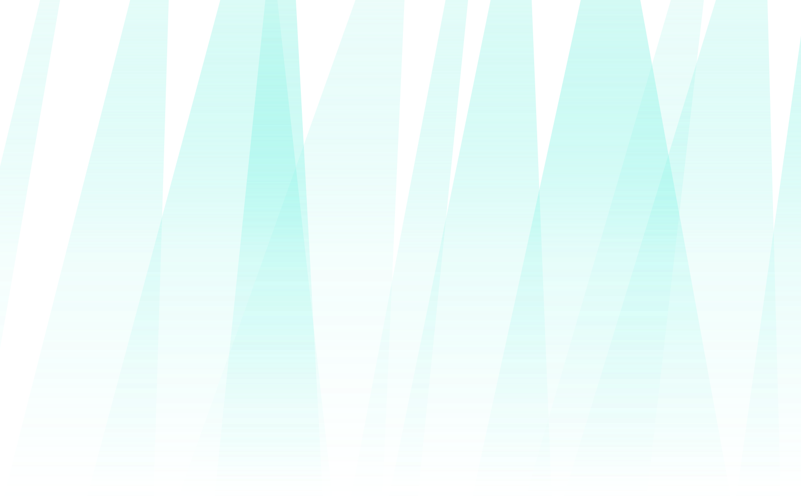
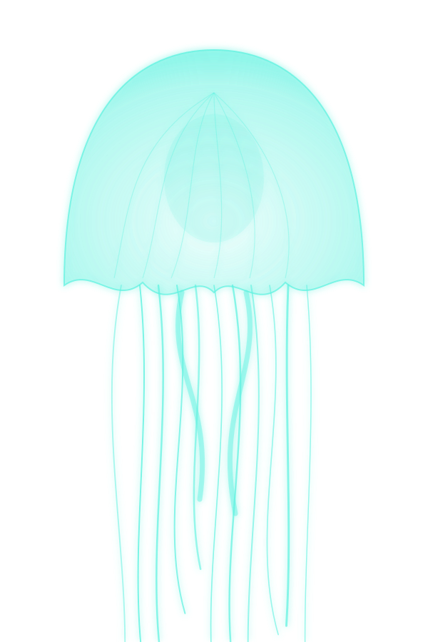
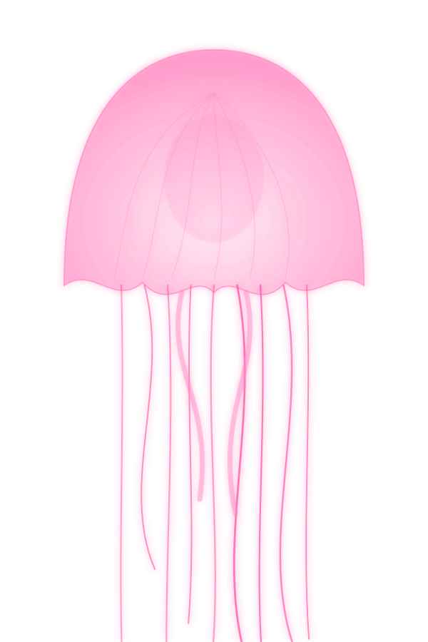
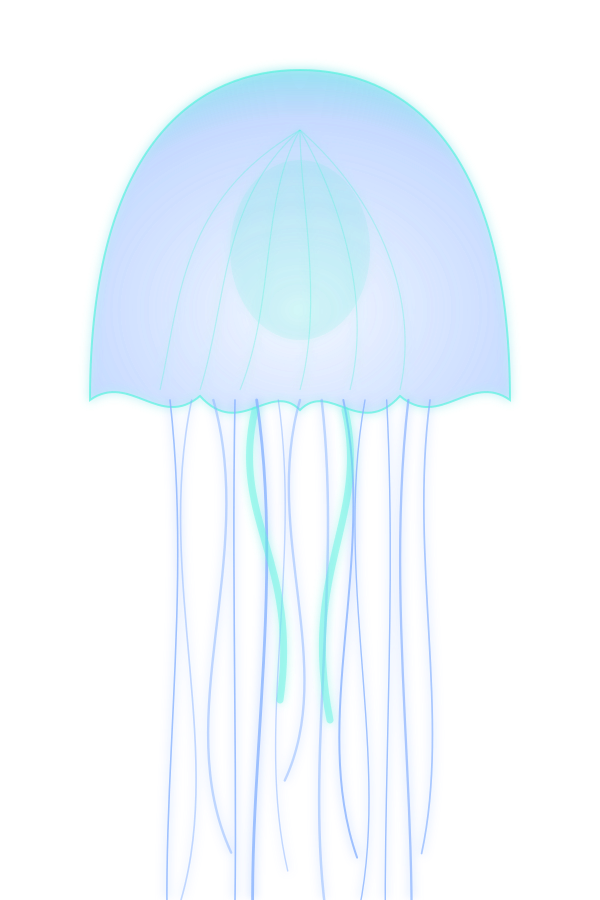
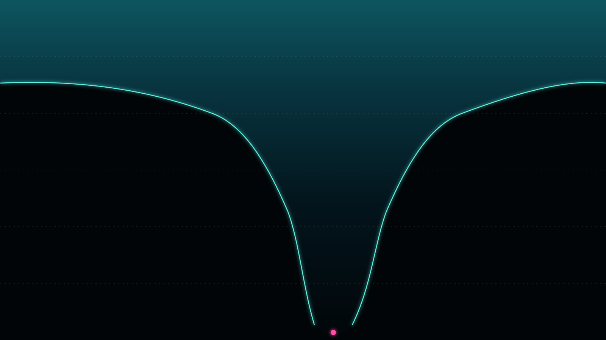

10,935m
Mariana Trench
Western Pacific. Does the deepest water on Earth carry its own food web, or only what falls from above?




An institute for the parts of Earth the sun has never reached.
Below the light there is still a place.
Descend.
You are in the
Photosynthesis happens here, down to about 200 metres. Everything bright and familiar about the ocean lives in this thin layer.
From 200 to 1,000 metres the blue fades to nothing. Animals here make their own light, mostly to hide.
To 4,000 metres: no sunlight at all, water near freezing, and food that arrives as a slow fall of dead plankton.
Down to 6,000 metres, the seafloor is a plain of soft mud. Life is sparse, slow and astonishingly well adapted.
Below 6,000 metres, only the trenches. Named for Hades, and as close to another planet as we can drive to.

Its summit would still sit more than two kilometres under water.
Planned dives for the coming season. Depths are the deepest known point of each trench.
10,935m
Western Pacific. Does the deepest water on Earth carry its own food web, or only what falls from above?
10,047m
South Pacific. How quickly do animals recolonise after a landslide on a trench wall?
8,376m
Atlantic. The deepest point in the Atlantic is also one of the least visited. What lives there?
7,290m
Indian Ocean. Where does the plastic that sinks end up, and who is eating it?
Everything on this page was measured, photographed and sampled in a place that has no day. We bring it up so that the surface can argue about it in daylight.
Dive notes arrive twice a year, when a trench is dived or a species is named. Nothing else.